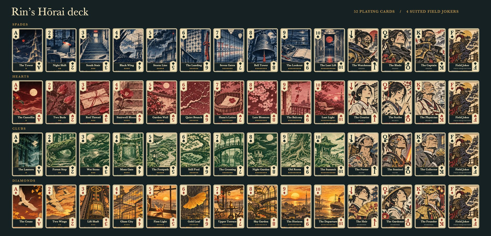

Rin's deck: a poker hand is your power
Upgrades are playing cards. Five are in play, and the poker hand they make decides what Rin can do. It was designed and playtested on paper before any code.
Most climbing games hand you three upgrades and ask you to pick one. We wanted the picking to be a game people already know.
How it works
- A new climb deals eight cards and equips five.
- The poker rank of the five in play is Rin's power. A pair does one thing. A straight flush does another.
- On the stairs you may take a card into your reserve, or pass.
- On every third cleared floor you compare, then keep the hand or change up to three cards.
- Guardians give permanent techniques that survive every redraw.

Paper first
The deck was designed as a document and run as a simulated paper playtest before it was built. Later it was actually printed.

The art
It is an engraved tower deck on aged ivory stock: ink black, oxidized brass and vermilion. Four suits of tower art, twelve court faces drawn from the cast, a reversible tower-and-blade back, and a field Joker that binds to one rank.


What the numbers said
When the whole climb was balanced the next morning, automated climbs compared two ways of playing the deck over 32 seeds each. Players who held strong hands changed cards about 3 times in a climb. Players who explored changed about 30 times. Both ended up with roughly four distinct powers. The open question for human testers: does keeping a strong hand stay an interesting decision?